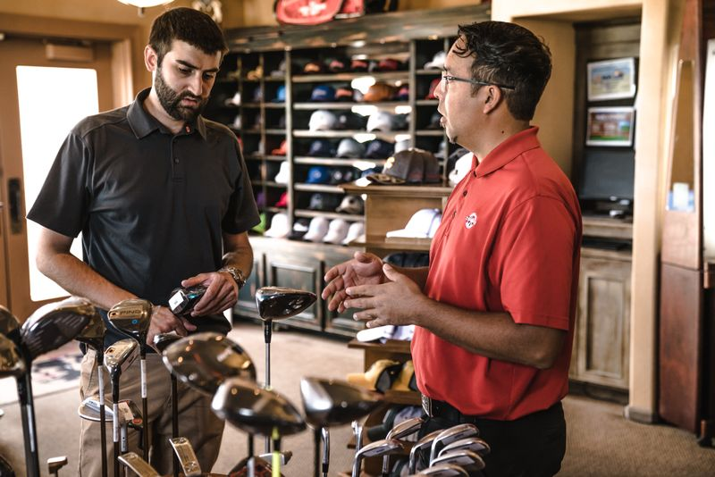
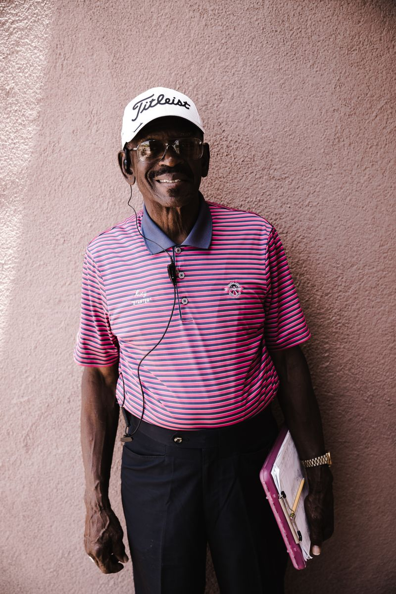

Birdie
Capture one swing, then move through each phase to understand what matters most.
One recording. One phase. One cue.

Place phone behind the ball, aligned with your target line.
Birdie Record
Set your phone behind the ball along the target line. Birdie helps you frame it right — then records one clean swing.
The angle coaches actually want to see.
Switch to 0.5x so the whole body fits without backing up.
Pick an existing video. Same analysis, no reshoot needed.
Birdie Analysis
Move through your swing to see what matters most in the moment.
One phase. One reason. One cue.
You begin the downswing too early.
Focus on the moment that matters.
Clear insight into the root cause.
Actionable guidance you can feel.

0:12You begin the downswing too early.
Your tempo settled. Watch the early extension through impact.
Birdie Journal
Every swing filed away with the club, the date, and a short note. Over a season you see what's drifting and what's holding.
Watch your scores settle into a pattern over weeks.
Tap any session to re-open the full analysis.
No cloud, no account. Your data is yours.
Record one swing. See the phase that matters. Hear one cue you can feel.